The neuron will activate when the activation level is greater than the threshold voltage. An activated neuron will turn yellow and trigger an action potential. The activation level of the neuron will go back to zero once it was activated.
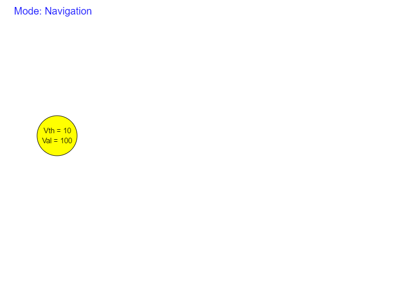
The arrow between two neurons represent synapses. The number on the arrow represents the "weight" of the synapse, in other words, the influence of the presynaptic neuron on the postsynaptic neuron. Excitatory influences (positive weights) are represented by a green arrow while inhibitory influences (negative weights) are represented by a red arrow.
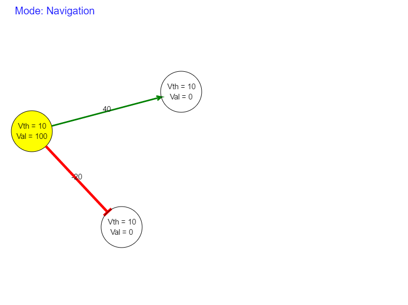
The weights of the synapses are added to the activation level of the post-synaptic neurons. The activated neuron's activation level resets once the activation. This is known as one iteration of computation and can be achieved by pressing the "Next" button or key N.
- Press A to switch to add mode. Add mode is for creating new neurons and new connections between neurons. Click on any empty space to create a neuron. A popup window will ask for the threshold voltage of the new neuron.
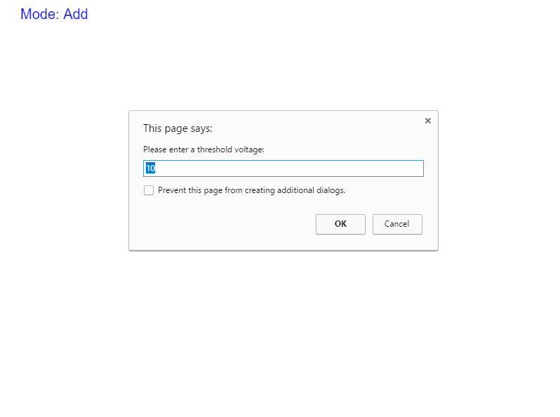
A neuron will appear once a valid threshold voltage is given.
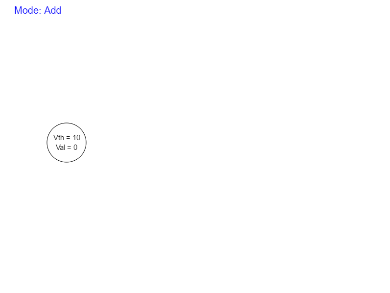
To add a connection. Click on the presynaptic neuron, move the mouse with left button pressed to the postsynaptic neuron and release the mouse. A popup window will ask for the weight of the synapse.
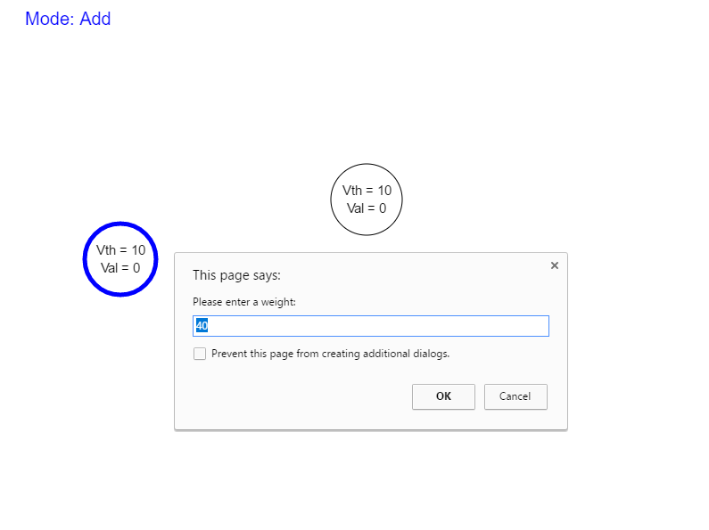
A connection will appear once a valid weight is given.
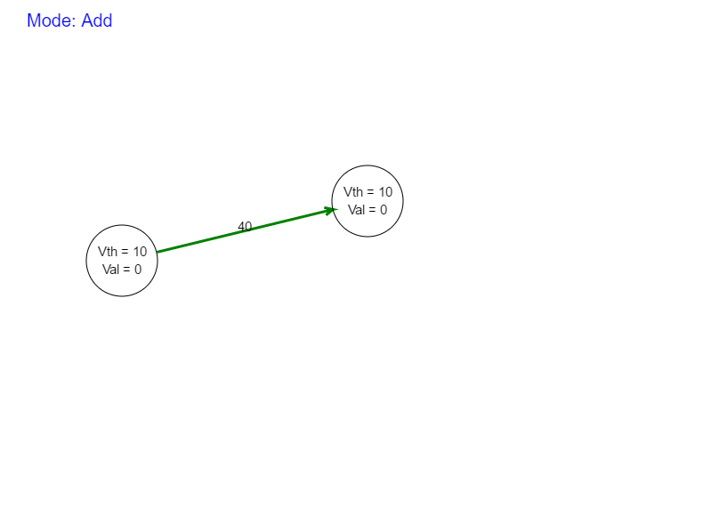
- Press D to switch to delete mode. Delete mode is for removing neurons and connections between neurons. To remove a neuron, click on any neuron. The neuron and all its connections will be removed.
To remove a connection. Click on the postsynaptic neuron, move the mouse with left button pressed to the presynaptic neuron and release the mouse.Notice that delete operation is in the opposite direction to adding a connection.
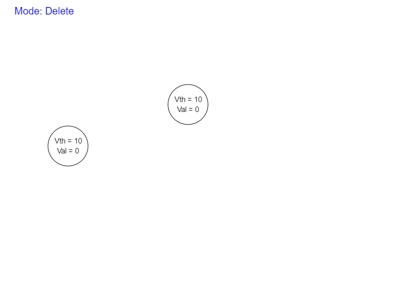
- Press E to switch to edit mode. Edit mode is for changing the threshold voltage of neurons and weights of edges. To modify the threshold voltage of a neuron, click on any neuron. A popup window will ask for the new threshold voltage of the neuron.
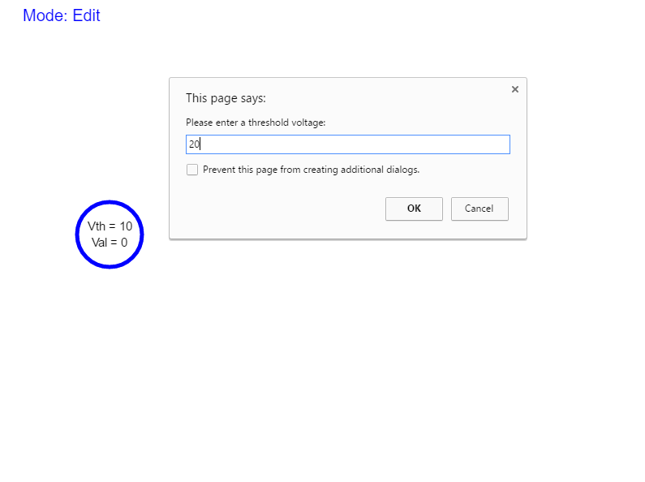
The neuron will be updated once a valid threshold voltage is given.

To modify a connection. Perform the same operation as adding connection. A popup window will ask for the new weight of the synapse.
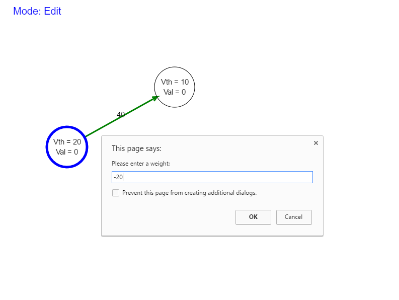
The synapse will be updated once a valid weight is given.
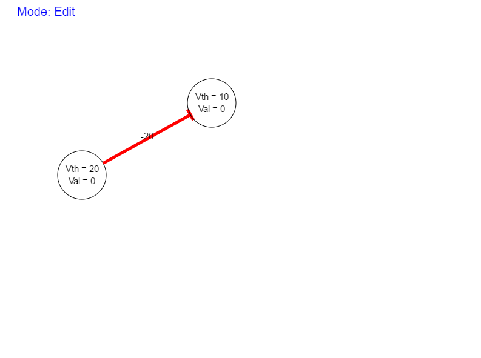
- Press T to switch to trigger mode. Trigger mode is for setting the activation levels of the neurons. To modify the activation level of a neuron, click on any neuron. A popup window will ask for the new activation level of the neuron.
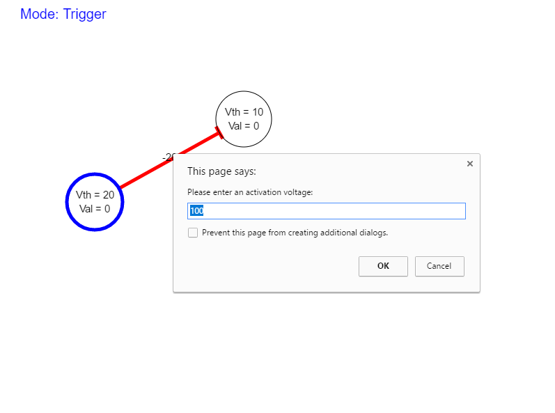
The neuron will be updated once a valid activation level is given.
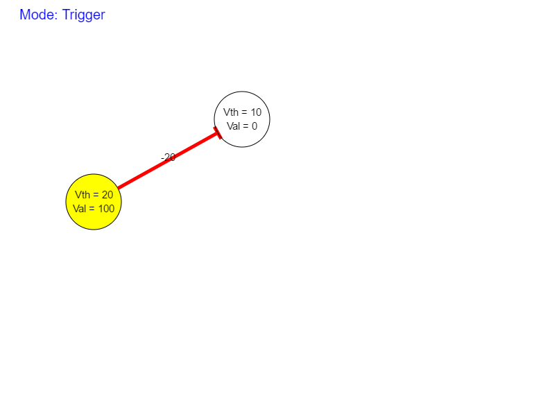
Key Commands
| Key | Mode | Function |
|---|---|---|
| Space | Navigation | Display the network structure |
| A | Add | Add neurons and connections between neurons. | D | Delete | Remove neurons and connections between neurons. |
| E | Edit | Edit the threshold voltage of neurons and weights of synapses. |
| T | Trigger | Change the activation level of neurons. |
| N | - | Perform one iteration of computation. Same as pressing "Next" button. |